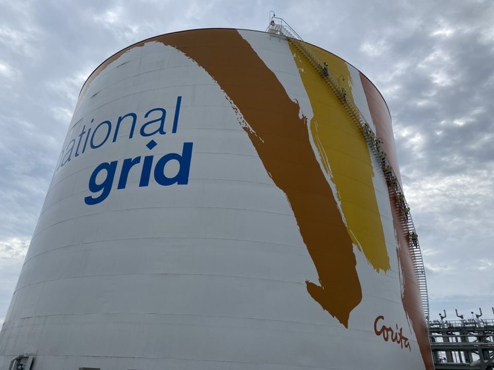
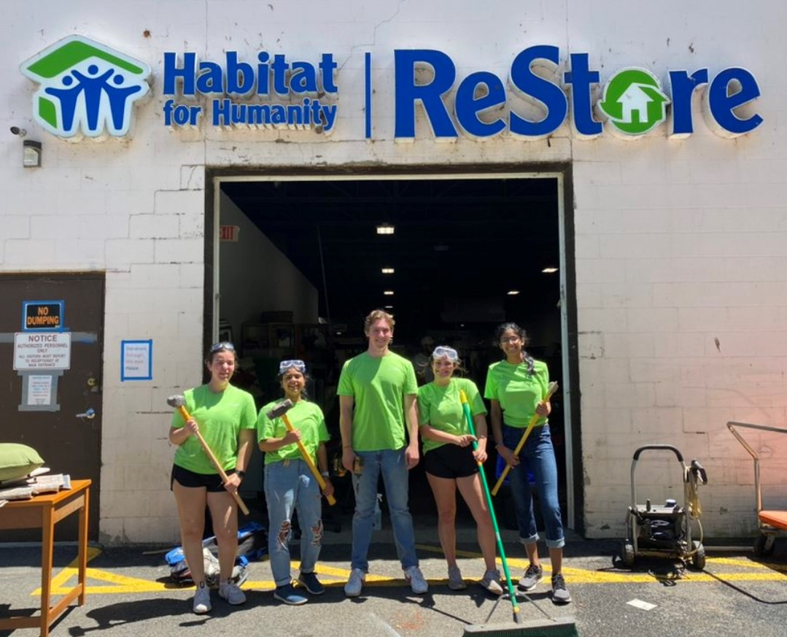
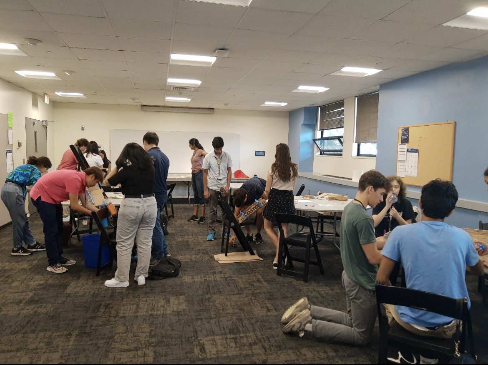

Work Experiences
Energy Efficiency Procurement Intern, National Grid
June 2023 - August 2023
description
Relevant skills: ----
Customer Experience Intern, National Grid
May 2022 - August 2022
National Grid is a gas and electricity provider for homes and businesses in Massachusetts and New York.
As a Customer Experience Intern, I independently worked on research projects to help revise customer strategy with the goal of increasing the company's customer satisfaction scores. I utilized research findings based on the energy industry as a whole and observed trends in high-scoring utility companies to recommend solutions to management. Additionally, I worked on and presented a case study with other interns to determine ways to increase customer engagement in company programs that help reach National Grid’s goal of Net Zero by 2050. My projects revolved around mobile app development, social media, and website analysis.
Relevant skills: Market Research, Data Analysis, Public, Speaking, Communication, & Leadership


Program Assistant, Museum of Science
June 2021 - August 2021
During the summer of 2021, I worked as a Program Assistant at the Museum of Science. My responsibilities included developing and leading weekly professional development workshops for interns. I also organized networking events for the interns and managed STEM Enrichment Programs.
Relevant skills: Leadership & Organization

Summer Courses Intern, Museum of Science
June 2019 - August 2019
During the summer of 2019, I worked as a Summer Courses Intern at the Museum of Science. My role required me to engage large youth groups (grades 1-8) in hands-on STEM activities, such as dissections, engineering design projects, and environmental investigations. I also supervised students on field trips and around the Museum and external locations to expose them to STEM-related career opportunities. I also attended weekly professional development workshops.
Relevant skills: ----